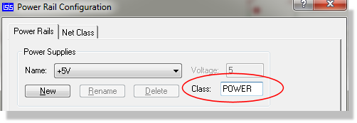
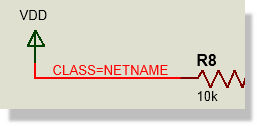
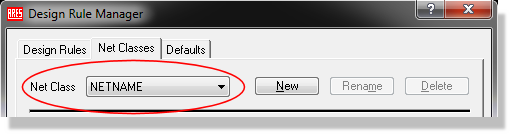

On the PCB layout, every net is associated with a routing class which defines track and via styles, net type, routing layers and so forth. Net Classes are also integrated into the design rule system, allowing you to better control clearances on a per class basis. By default, all nets take the SIGNAL net class except.
One of the most important things you can do to make your PCB layout easier is to create and assign net classes as you design the schematic. This will automate both the trace and via selection when routing and give you full control over board constraints and clearances.
The most common reason for assigning a net class other than SIGNAL is because the net is part of the power wiring and will carry heavier currents. With this in mind, Proteus allows you to specify a routing class for each power supply defined in the Power Rail Configuration dialogue form which you can access from the Design menu in the schematic.
To do this you need to edit the name displayed in the Net Class field of the Power Rail Configuration dialogue form as shown below:

Changing the Routing Class assigned to a Power Rail
Note that the class will be applied to all the nets which are bound to the power supply - VCC and VDD in this case.
For further information about changing the power rail configuration see Power Rail Configuration
You can also override the default class assignment for a given net by attaching a Net Property to one of the wires on the net. This is achieved by placing a wire label and defining a net class as shown below.

Assigning a custom routing class via a wire label
Using a wire label to specify a net class
If the named net class does not exist, the layout module will create it and add it to the net class selector in the layout Design Rule Manager when the netlist is loaded. Trace and via styles for the net class can be edited via this dialogue form and design rules created to constrain clearances as required.

The net class 'is available for Design Rule Config in the Proteus Layout Module (Technology Menu)
Sometimes it is appropriate to specify a net class for all the nets on a given sheet. For example, you might want all the nets on the power supply sheet to be assigned to the POWER net class.
This could be done by placing a script block as follows:
*NETPROP
CLASS=POWER
on the appropriate sheet of the design.
Wire and bus label net properties take precedence over sheet global net properties.